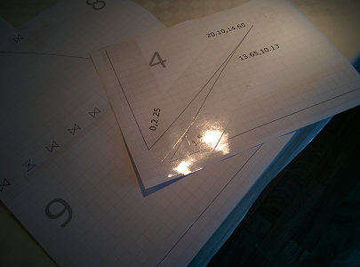

Welcome to the Falken plans page. These plans are for the single skin kite described on the Falken kite page. The Falken plans pdf is used in conjunction with these instructions to build this single skin kite.
Contents:
- Build the Paper Model
- Assemble Templates
- Mark and Cut Fabric
- Sew Wing Panels to Center Panel
- Mark Center Panel TE Corner Notch
- Sew Notches
- Sew Down Main and Notch Seams
- Pigtail Tabs
- Flying Line Connection Points
- Create Trim Bands
- Sew Edge Trim
- Finish
- Thoughts
- Improvements
Build the Paper Model
The third page of the Falken plans pdf is a paper print and tape model. If this is a new type of construction for you, mistakes on expensive ripstop will be minimized by building the model before the real thing.
⇗{kind=link}
- Cut out the model.
- Tape the wing panels to the center panel. The curve of the wing panel connects to the center panel line between the two notches.
- Tape the notches in.
{kind=link}
Hint: use small pieces of tape at the nose where the curve is tight.
Did your model turn out looking something like mine? If not, the key to success is to give up early and often. Wait, sorry, that is the key to failure, my bad. Success requires using different strategies until the desired result is achieved.
Assemble Templates
Print out the template pages. Use a printer setting which does not scale the drawing to the paper size. Ensure that the template pages are printed correctly by measuring the squares on the page. Each square on the printed sheet should be exactly 1cm x 1cm.
⇗{kind=link}
Prepare the template sheets:
- trim edge of paper where template sheets are joined so that non-printed areas are removed
- use hole punch to make hole in center of alignment mark
- align template pages using the hole
- tape down both sides
We end up with four templates: two single sheet templates, a two sheet template for the large center panel notch, and a five sheet template for the wing curve.
⇗{kind=link}
Reinforce the templates:
- use tape along edge of cut lines
- on both the front side and the back side of the paper
- yet another layer of tape on the pointy ends of the corner
I use wide clear packaging tape for this step.
⇗ ⇗{kind=link}
{kind=link}
View of all templates after tape reinforcement:
⇗{kind=link}
Cut the notch openings. When cutting, we are not trying to cut on one side of the line or the other,
we are trying to split the line in half.
{kind=link}
Not too bad, we can see the printed notch line on both the cut out material and on the notch template. The wing tip notch is not at 45°, so we see that the very tip of the cut out material is not symmetrical (as intended).
To make the template more rigid, we reinforce the notch openings with leftover panel paper.
⇗ ⇗{kind=link}
{kind=link}
This stabilizes the notch opening so it does not vary when tracing it to the fabric.
A view of all the templates before attaching them to the large backing paper:
⇗{kind=link}
We use printed templates for the detail shapes, and join them large backing paper for the overall template. To prepare the wing panel notch and the small center panel notch:
- in the backing paper, cut a notch larger than the actual notch
- fit the printed template notch in place
- tape in on both front and back
It is important to note that we do not fit the large trailing edge center panel notch in the backing paper, we leave it free floating.
⇗ ⇗{kind=link}
{kind=link}
From the plans, we see that the overall length of the center panel is 122.27 cm long. For the template, we let the center panel "run long" by a few cm (and do not mount the large notch) so that sewing creep can be absorbed. However, we do mark the intended 117.10,58.01 ending point for the fabric join sew line on the template so we can transfer this to the fabric and evaluate how good or bad a job we did sewing the panels together.
The center panel is done, with the small notch taped in and the large notch free floating.
⇗{kind=link}
Instead of taping the wing curve template to the backing paper, I simply traced the curve to the backing paper itself and cut the line. I was able to get away with this shortcut as the backing paper I use is rather stiff. If using thinner backing paper, I would use the normal procedure of removing backing paper material under the paper template and taping the paper template for the wing curve in place. Writing this long explanation makes me wish I had just followed the standard procedure in the first place.
⇗{kind=link}
The templates are done! Congratulate yourself, but don't look for approval from the outside world. Ordinary folks will not be able to fathom the single skin kite significance these templates represent. Take a sip of your favorite beverage while you admire the templates, then move on to shaping the kite material.
Mark and Cut Fabric
I have fabric wide enough so that I can orient the fabric warp along the leading edge of both the wing and the center panel. This is the preferred orientation, but is not critical. If not orienting along the warp, orient along the weft.
⇗{kind=link}
The center panel is marked one half panel at a time. The center line of the center panel is only marked enough so that the template can be aligned when flipping in over to mark the other half.
⇗{kind=link}
Joining the wing panel to the center panel requires marking a double line. The inner line is the sew line and the outer line is the fabric cut line. For purposes of measuring after joining the panels, mark the intended end (near the trailing edge) of the fabric join line on each side of the center panel.
⇗{kind=link}
I use pencils taped together to produce the double "cut and sew" lines.
Note that the large center panel notch is not marked at this time. It will be marked after the wing panels are joined to the center panel.
⇗ ⇗{kind=link}
{kind=link}
The notch reinforcement bridge requires we fill in the notch wall after drawing from the template.
⇗ ⇗{kind=link}
{kind=link}
Draw using pencil. Mistakes can be erased. Here I made the mistake of forgetting to budget area for the double "cut and sew" line and needed to move the notch.
⇗{kind=link}
Fortunately, mistakes made when marking the fabric are easily recoverable. Before putting the scissors to the fabric, take a deep breath and check one more time that the marks are correct and that there are double lines on the sides of the center panel and the curve of the wing panels.
⇗{kind=link}
Progress! Cutting the panels in a major step. Do not cut the notches until later, after sewing. This makes sewing much easier.
Sew Wing Panels to Center Panel
The goal for sewing is accuracy. Use tape to hold fabric in place to start the sew line. Do not sew over tape.
The strategy for sewing is having the center panel with the straight sew line panel on bottom, and the wing panel with the curved line on top. The lines do not lie flat against one another, so some manipulation during sewing is required. It is easiest to move the top layer while sewing.
We first sew the wing panel which will pull fabric inside the sewing arm - this minimizes the maximum amount of fabric pulled inside the sewing arm when sewing the kite.
When sewing the wing panel to the center panel, start from the leading edge and work to the trailing edge. To prepare for making this sew line tape the wing panel over the center panel in the proper position and angle. The entry angle is 45°. The start position is at the start of the sew line on the wing panel and the corner of the notch and the sew line on the center panel.
⇗{kind=link}
To ensure that both wing panels have the same entry angle, layer the second wing panel over the first and trace the line (near the ruler) were you can see the leading edge of the center panel fabric underneath the two layers of wing panel fabric. Use this line for alignment after sewing the first wing panel, during the taping of the start of the opposite wing panel.
⇗{kind=link}
Marking this angle ensures symmetry, which is more important than the accuracy of the angle.
Prepare for sewing! Short stitch length "for strength" is a sign of weakness in the design. I set my machine with a 5mm straight stitch. This might be on the long side, I will use 4mm on my next build.
⇗ ⇗{kind=link}
Verify that the bobbin is full. Make a test sew on a sheet of paper to verify that the machine is operating correctly.
Start about 2cm forward on the stitch line and sew backwards, then forwards to lock in the end of the join. Always stop with the needle down to keep the fabric from slipping. Remove the tape after the end is locked down.
⇗ ⇗{kind=link}
{kind=link}
Joining the curved wing panel line to the straight center panel line is the most difficult part of building the Falken. However, this is less difficult that sewing in a single rib in the average foil kite. Recovery is always possible because of the long stitch length: simply pick apart the stitches and try again.
Sewing progresses by doing a couple of stitches, then adjusting the alignment of the fabric. Very light pressure on the fabric while sewing is key. Differing push/pull pressure on the top and bottom fabric will result in different progress along the sew lines and an offset when reaching the end of the join.
⇗{kind=link}
Sewing along with the material inside the sewing arm. We do it "the hard way" first, because otherwise we would at last have an additional wing inside the sewing arm if starting with the opposite wing.
We reach the end of the join and reverse stitch to lock in the join.
⇗{kind=link}
Note the vertical mark on the white fabric half a cm from the end of the orange fabric. This marked the end of the sew line on the center panel. We let the center panel run long on purpose and did not mark the long notch for exactly this circumstance. It is nearly impossible to have the sew line lengths match when sewing the wing panel to the center panel as they do not lie flat against each other.
I am about half a cm off in this picture, which is ok. Challenge: see if you can do better than this! Also, note that I am about one stitch short of reaching the end - I should have continued to get as close to the end as possible, but not go over.
Now we attach the opposite wing.
⇗ ⇗{kind=link}
{kind=link}
Use the angle alignment mark from attaching the previous wing to give a symmetric entry angle. Tape down the start of the sew line as the first wing and progress similarly.
⇗{kind=link}
Sewing this wing is easier as all the material lies on the table, not inside the sewing arm. Sew to the end and reverse to lock in the stitching as before.
Measure the second ending mismatch between the wing and center panel. We are hoping for a similar mismatch, i.e. if my first join was 0.5 cm too long on the center panel line, then I am hoping for a 0.5 cm too long on the center panel line on the second one as well. If these are wildly different (e.g. 0.5 too long on one and 0.5 too short on the other) then consider redoing one side.
⇗{kind=link}
Over the hump! You have completed the most difficult part of the construction. On to taking care of the notches.
Mark Center Panel TE Corner Notch
We mark the center panel large notch and trailing edge after joining the panels so we can position them at exactly the right location in spite of slippage when sewing the wing panel to the center panel.
The goal is to create a "three corner" point at the trailing edge bridle connection pigtail: one corner from the wing panel, and two corners from the notch sewn into the center panel fabric.
⇗ ⇗{kind=link}
{kind=link}
The long edge of the template is aligned along the sew line, the short edge is aligned toward the trailing edge. The point of the long edge of the template should end at the sewn line exactly where the wing panel ends. Flip the template over to mark the other side.
⇗{kind=link}
Join the marks for the trailing edge using a long ruler.
⇗{kind=link}
Clip the excess fabric off, and we have the overall kite shape finished, ready for tailoring!
Sew Notches
Sewing in the notches is much easier than sewing the wing panel to the center panel. The notch walls are reflections of each other. Folding them in half will result in the notch walls lining up exactly.
⇗ ⇗{kind=link}
{kind=link}
After lining up the notch walls, use a piece of tape to keep the alignment. Use the normal procedure of sewing backwards into the start of the seam and backwards out of the end of the seam to lock the stitches in.
⇗ ⇗{kind=link}
{kind=link}
Sew all the notches: the four center panel and the two wing panel notches. The sew line does not extend as far into the fabric as the marked line. It stops when there is almost no material left to sew together.
Sew Down Main and Notch Seams
The purpose of sewing down the seams and notches is to enhance the join strength and create a flat canopy surface.
The strategy for sewing down the notches is to fold all notches towards the bottom of the kite, and to fold the wing connection seam towards the center. A specific technique is used when sewing: use a small amount of pressure to open seam all the way to the original sew line as you sew down the seam. The sew down line is about 1-2mm from the original sew line.
⇗{kind=link}
After sewing down each notch, trim off excess material, being very careful not to cut anything else! At the trailing edge of the kite, the folding strategy means that both the fabric join fold down and the notch fold down are in the same direction.
⇗ ⇗{kind=link}
{kind=link}
The trailing edge "three corner" result (second picture, above) is pretty close: all three corners are within 2mm of each other.
At the leading edge, the folding strategy means that the panel join fold will fold against the direction of the notch fold. We resolve this by trimming the front part of the notch fold excess material so that the fabric join can fold over the notch. Trim the excess material from the notch fold before sewing down the fabric join.
⇗ ⇗{kind=link}
{kind=link}
Flipping over the leading edge, we see a very nice result. The "three corners" are almost perfectly aligned!
⇗{kind=link}
Only the pigtails and the hem band left, we are getting very close! Take a break to avoid fatigue related mistakes. I recommend watching Friendship 7 & Astronaut John Glenn, a NASA documentary from 1962. After absorbing nostalgia and motivation from this film, it is time to tackle the pigtails.
Pigtail Tabs
Four flying lines are connected directly to the kite without using a bridle. Optionally, a bridle can be used to fly with two lines. In both these configurations, the flying lines or bridle is connected to the kite's pigtails. Pigtail tabs are used to make sewing the pigtails to the kite easier and more accurate.
⇗ ⇗{kind=link}
{kind=link}
In this build, two 15cm sections of 100kg polyester line are sewn to two 5cm sections of hem band material to form the basis for four pigtails. See the improvements section for an alternate suggestion using dyneema and longer TE pigtails.
Start sewing from the middle of the pigtail centered on the hem band material. Sew to one end. With the needle down, lift the foot and spin the pigtail tab 180°. Sew all the way to the other end, then do the lift and spin dance again. Sew to the middle to complete one double tab.
⇗{kind=link}
Two double tabs are converted to four pigtail tabs by cutting the double tab in half, and slightly melting the exposed cut line. Little attention is paid to the length of the line coming out of the pigtail tab at this point. The only requirement is that it is 'long enough' to be measured and trimmed down later after the hem bands are in place.
⇗ ⇗{kind=link}
{kind=link}
This is an example of how I prepare pigtails for a kite. This works well for me, but of course feel free to use another method if you have previous experience with something that you think works better.
Flying Line Connection Points
The pigtail tabs are sewn to the canopy to create the flying line connection points.
⇗ ⇗{kind=link}
{kind=link}
Sew the pigtail tabs to the connection points so that the pigtail exits the fabric at the correct point and the tab ends where the kite fabric ends. Trim away excess fabric from the pigtail tab so it matches the outline of the fabric.
⇗ ⇗{kind=link}
{kind=link}
These pictures show the attachment at one wing tip, but all four tabs are attached the same way. The idea behind attaching the pigtail tabs at this point in the construction is so that strength is maximized with the pigtails layered under the perimeter trim band.
Do not finish the line end pigtails yet. To maximize accuracy, we wait until after the entire hem bend is installed before final measurement and finishing of the pigtail.
Create Trim Bands
I like using trim bands to finish up the edge of the fabric rather than making a panel long and folding up the edge. See the improvements section for an argument in favor of this style.
I use a 6cm wide strip of fabric to make these bands. Fold the band in half, then fold each side into the original fold to make a trim band 1.5cm wide. I overlap each band by 3cm at each end to reinforce the key fabric join and wing tip areas.
Based on these parameters, see the Falken edge trim layout pdf for a possible cut mark layout of the bands on band fabric.
⇗ ⇗{kind=link}
{kind=link}
You can adjust this layout to match the area of the band fabric you have at hand. Note the band orientation along the fabric warp. This will maximize the trim band strength.
⇗{kind=link}
Carefully fold and iron the bands. I do this in two steps: first I fold by hand and hold in place with clothes line clips. Then I iron the folds in place and weigh the bands down to cool.
⇗{kind=link}
Kite building is an experience which makes you almost entirely domesticated. Update your dating profile highlighting your proficiency in fabric cutting, sewing, and ironing. You will most certainly make someone a very fine housewife or househusband with these desireable skills.
Sew Edge Trim
Attach edge trim in the order: center TE, wing TE’s, wing LE’s, center LE. In general, there is a 3cm overlap on the bands. On the wing tips, there is only enough overlap to match the ending edge
Central trim bands are cut 6cm longer than the edge they cover. Cut a 3cm slot in one end and start sewing from that end. Align the band so the slot starts at the fabric join. This means for the TE that the pigtail can poke through the slot.
⇗ ⇗{kind=link}
{kind=link}
When nearing the end of the band, mark on the band where the canopy material joins. Cut the ending slot to that point and let the pigtail poke through.
After sewing the main zig-zag on the band to attach it, use a straight stitch to trace the perimeter of the band.
⇗ ⇗{kind=link}
{kind=link}
The bands for the wing panels done similar way: start with the internal end using a 3cm slot. When after reaching the wingtip end, cut off the excess band material square and do the straight stitching around the perimeter of the band.
⇗ ⇗{kind=link}
{kind=link}
A view of the entire kite after completing the trailing edge trim:
⇗{kind=link}
This sequence of pictures shows starting from the tip and working toward the center of the kite when attaching the wing leading edge trim.
⇗{kind=link}
This is actually opposite the sewing direction recommended above and requires stopping to measure and cut the slot. Save yourself some work and follow the "do as I say, not as I do" principle.
⇗ ⇗{kind=link}
{kind=link}
The "square" wingtip after the attachment zig-zag and trimming off the excess length. Note how the pigtail is under both layers of the edge band. There are eight layers of edge band material for all band overlaps.
⇗{kind=link}
The center panel leading edge band is attached much like the center panel trailing edge band.
Cut a 3cm slot in one end. "Push in" the band so the slot starts at the fabric join. Zig-zag stitch the band down until close to the opposite end. Mark and cut the slot appropriate to matching the panel join location. When finished with the zig-zag stitch, use a straight stitch around the perimeter of the edge trim.
⇗{kind=link}
Be extra careful when cutting slots and trimming ends. It was here I accidentally chopped the tip off one of my pigtails. This forced me into making all pigtails shorter than I normally use. It could have been worse! Chopping off an entire pigtail would have meant pulling up a lot of stitches to install a new one as the pigtail tabs are layered under the edge trim.
Finnish
No, it's Danish. You will not find humor like this anywhere else on the Internet! Perhaps this is a good thing.The last part of Falken construction is to finish the pigtails. All pigtails should be the same length, and as short as possible if not using dyneema. If using dymeema, it is possible to make the rear pigtails perhaps 10cm longer to make the required front and rear line lengths more equal.
We mark the pigtails with both a cut line and a 'melt to' line.
⇗ ⇗{kind=link}
{kind=link}
The pigtail line I use works well with melting 1/2 cm to create the backing blob for the pigtail knot. Test your line to see what works well for you and mark your pigtails accordingly.
A simple overhand knot is tied tight against the blob end to finish the pigtail.
⇗ ⇗{kind=link}
{kind=link}
The trailing edge pigtails look much like the wingtip pigtails. Or, they could be longer if using dyneema and extended to give neutral flying line length.
⇗{kind=link}
Quality check over the entire kite: finish up any band ends which need reinforcing, clip off any loose thread ends, etc.
All done! Reward yourself by taking a well earned a selfie, prominently featuring the awesome kite you just built, and post to social media. Time to go flying! Or, if it happens to be raining then read the text below instead.
Thoughts
There are several operations in kite building. Among those, the least reversible is cutting the fabric. Along the lines of “measure twice, cut once”, take the time to ensure that you are cutting at the proper place and time. Panels have a cut line and a sew line. Cutting as late as reasonable is usually a good idea. For example, postpone cutting off excess notch fabric until after the notch is sewn in.
Initial steps in kite building have a larger impact than later steps. For example, if a template is distorted, the entire kite will be affected no matter how precise the steps after template making are done.
A non-symmetrical error is worse than the same error on both sides of a kite. Most designs can absorb a certain degree of imprecision as long as the same imprecision is mirrored during construction. This is why we make a half center panel template. Preserving symmetry with the wing panel considers two things: fabric alignment and fabric face. To preserve symmetry, keep the same weft/warp alignment on both panels. Flip the wing panel template so that the same face of the fabric ends up being on the “outside” of the wing panel. In practice this means that we flip the wing panel template (much like the center panel template) along one edge to draw mirror images with a shared edge.
Improvements
I am still learning as both a kite designer and a kite builder. To improve my skills, I take time to reflect on a build and evaluate what went right and what could be improved in a future build.
Good:
- Pdf plan set with templates. This is clearer and more accessible than a link to a cad design file.
- Hem band. The alternative to the hem band is to add additional length to a part be able to strengthen the edge by folding it. The hem band is more straightforward, can be made in bulk, and can layer over points needing additional reinforcement.
- Pigtail tabs. Sewing small patches of fabric works quite well to better control the pigtails and accurately position them.
- Stitch length. Longer stitch length is a good thing. As noted in the instructions, if the design is good, narrow stitching to strengthen an area is not needed. I have now settled in that 4mm is my default stitch length.
Improve:
- Panel join. Sewing a curved line to a straight line is the most error prone part of the Falken construction. I was unable to eliminate this curved-to-straight join during the design phase. In previous builds, I used and intermediary hem band strip to join the panels in stages. Both techniques have their drawbacks. A future design might be able to eliminate this sewing challenge.
- Pigtail material. I used polyester line. I have leftover dyneema flying line, so I should use this instead.
- Pigtail length. The pigtails are short to eliminate stretch effects. If using dyneema, I can make all pigtails a reasonable length and extend the rear pigtails by 10cm so neutral flying line length adjustment is closer to zero.
- Flying line connection point reinforcement. If flying in strong winds, the kite will probably last longer if additional layers of fabric are used, similar to how spinnakers are reinforced at the corners.
Return to the main Falken page.